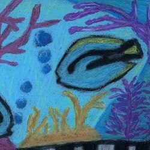
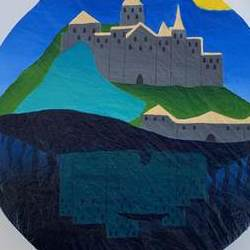
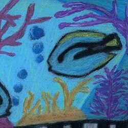
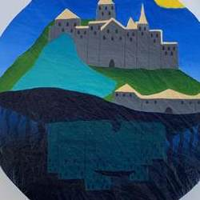

Xavier Lira
The career that I am interested in is school psychology due to my passion for it. Throughout my life, I’ve always wanted to help people with mental issues simply because I found it interesting to understand how someone’s mind works. It wasn’t until my sophomore year when I really began looking into this career in order to further prepare myself. My ultimate goal is to then become a licensed school psychologist whose purpose is to help those in need whenever the opportunity is available. Although this career pays a substantial amount of money, it is not what motivates me. I am inspired to pursue this career due to my curiosity and passion for understanding someone’s mind through various scientific methods. Being a school psychologist brings forth multiple challenges to which I am ready to face with hard work and dedication.
Once I obtain my bachelor’s degree from UCR, I plan on immediately being admitted into a master’s program and working towards my ultimate goal of becoming a school psychologist. I plan on pursuing school psychology because I’ve always enjoyed working with kids of all age groups and would love to help kids succeed in a school environment. Moreover, I am well aware that I must have excellent grades in order to actualize my goals, which is why I diligently focus on my academics, leading me to have a 3.60 G.P.A. Moreover, I am currently working as a tutor at a six through twelfth-grade public charter school where I work closely with kids who struggle academically, allowing me to realize that everyone has their own problems to overcome. Consequently, I plan on pursuing a higher-level education for numerous years to come in order to fulfill my passion of being a school psychologist.
Some personal strengths that I naturally have which define me as a person are my willingness to listen, my patience, and endurance. However, I also have to be able to look at my patients' issues through a scientific lens which I am not too familiar with yet. This is why I will continue to encourage myself when it comes to learning new things, especially in college where I will be excelling in my academic achievements as well as my social skills. My education in college will then be extremely vigorous due to the tediousness of being a school psychologist. I will spend an estimate of about eight years learning whether it is on a college campus or not.
There are multiple skills and tips that I have obtained over the course of my sophomore year due to the teachings of my aunt who is a psychologist. From her, I was told to improve my speaking skills, collect my thoughts before I say them, and to be patient. These traits are important because as a school psychologist, I would need the patience to attentively listen to my patient, communicate in a well-informed manner, and make sure that what I’m saying is credible.
Experience
Instructional Tutor
• Tutor for grades 6-12
• Specialized in helping extra-needs students
• Savvy in the field of professional development
Student Event Manager
• Responsible for ensuring peers did their jobs
• Ran constant errands for booths
Blood Drive Volunteer
• Responsible for providing care to blood donors
• Set up and cleaned up after event
• Ensured everyone left
Education
University of California Riverside
Portfolio



 